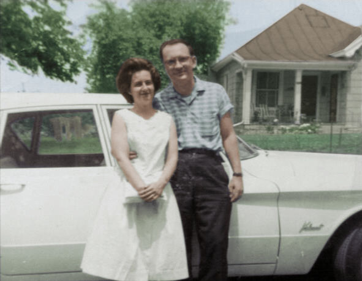

In Loving Memory
March 20, 1934 – June 12, 2026
A devoted husband, father, scientist, and family anchor, Louis Henzi spent his life in quiet, steadfast service to his family, his craft, and the community around him. Born and raised in Cincinnati, Ohio, he carried a lifelong pride in his Swiss heritage, his German roots, and his deep West Side connections—from his college days at UC to the decades spent building a life with his beloved Shirley. His family would joke that they never thought he'd grow up to marry a Jewish girl from Price Hill, but they did and made a beautiful family.
As a chemist, Louis brought a sharp, curious mind to everything he touched—a legacy that inspires his family to follow in his footsteps. He was a forward-thinking man who early on introduced computers to his family, even helping his wife do some of the earliest online genealogy, creating family trees that his grandkids still cherish to this day. He was a man who appreciated the comfort of routine, yet could still be convinced by those he loved to step outside his comfort zone when it meant being with and supporting family.
Louis was a man of firm principles who walked a distinct line: he was a fierce defender of civil rights who stood firmly against bigotry, while remaining a staunch supporter of law enforcement—though he always maintained, with characteristic conviction and wit, that they had better have a warrant if they wanted to come in the door.
Above all, his greatest legacy is the family that looked up to him. Multiple generations patterned what a good life should look like after his example. He loved his many grandchildren and great-grandchildren very much, and they loved him deeply in return. He leaves behind a beautiful, lasting blueprint of love, integrity, and enduring warmth.
At a Glance
Born
March 20, 1934
Cincinnati, OH
Career
QA Lead, Drackett Co.
Chemist, National Lead
Fernald Site
Married
Shirley Thrasher
May 14, 1956
Legacy
3 Children
6 Grandchildren
& Many Great-Grandchildren
West Side Roots
Dalbert, Woodruff & Isenogle — where services were held for his mother and his wife Shirley
Navigate the milestones, memories, and moments that shaped his world.
Help Us Remember
Do you have a photo, a date we got wrong, or a story that belongs in this timeline? The family would love to hear from you — every detail helps keep his memory complete.
Submit a Memory →